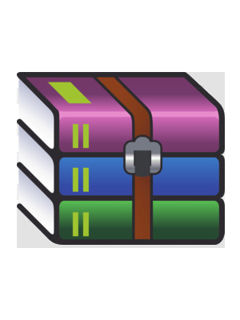
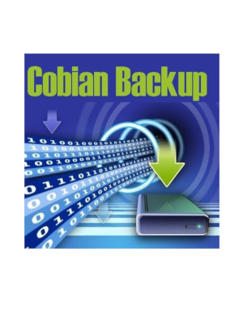

Utility Programs
These program assist with a wide range of system maintenance and security
functions such as cheking storage disks for errors, blocking security and privacy threats
and backing up important files.


Categories of utility programs
- Troubleshooting or diagnostic programs
- these utility programs recognize and correct problems.
- Antivirus programs
- these programs protect the computer system againts viruses or
damaging programs that ccan invade the computer system.
- Backup programs
- these programs make copies of files to be used in case the originals are
lost or damaged.
- File compression programs
- these prohgrams reduce the size of files so they require less storage space
and can be sent more efficiently over the Internet.